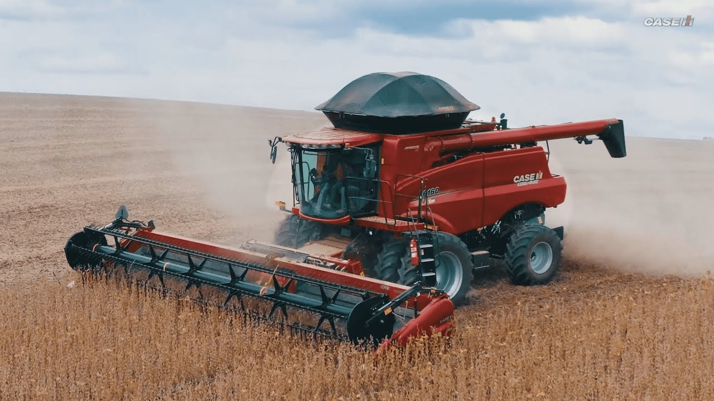
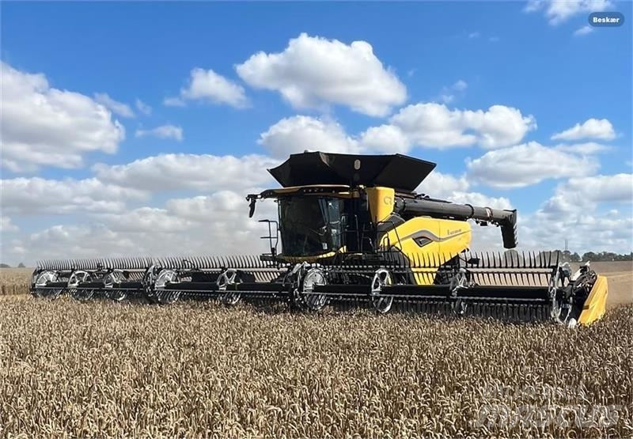

Galeria de Máquinas Agrícolas
Colheitadeira S790 | Colheitadeira de Grãos Série S Sistema Dyna-Flo Plus, reduz o volume de retrilha em até 28%; Sistema ATA – que ajusta a abertura das peneiras e a velocidade do ventilador, adaptando-se a topografia do terreno; Active Yield: acuracidade nos mapas de produtividade; Combine Advisor com ActiveVision: calibrações automáticas garantindo o máximo de produtividade e qualidade, independentemente das condições da lavoura no decorrer da operação de colheita.

Case Axial Flow A série oferece nova transmissão com acionamento eletrônico de 4 velocidades, que assegura mais agilidade nas operações e maior conforto, além de novo eixo dianteiro que traz maior robustez. Essa nova linha de colheitadeiras é indicada para todo perfil de produtores, que dia após dia busca aumentar o profissionalismo em seus negócios. Novo ventilador Cross-Flow auxilia na redução de perdas em terrenos inclinados.

CR11ModeloFPT CURSOR 16 A New Holland apresenta a revolucionária colheitadeira CR11, concebida para transformar a agricultura com maior capacidade e automatização completa. Essa máquina inovadora reduz significativamente os custos e o tempo de colheita, levando a eficiência a novos patamares.
Massey Ferguson MF 6690 Hybrid A colheitadeira Massey Ferguson MF 6690 Hybrid é uma colheitadeira híbrida de classe V, projetada para a colheita de diversos tipos de grãos, com destaque para o sistema Multicrop que permite a troca rápida de culturas. A máquina possui um motor AGCO Power de 6 cilindros com 7,4 litros e 265 cv de potência, além de freios ampliados com 4 pinças, proporcionando maior segurança e controle.
Voltar